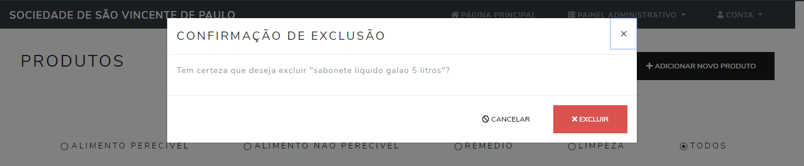
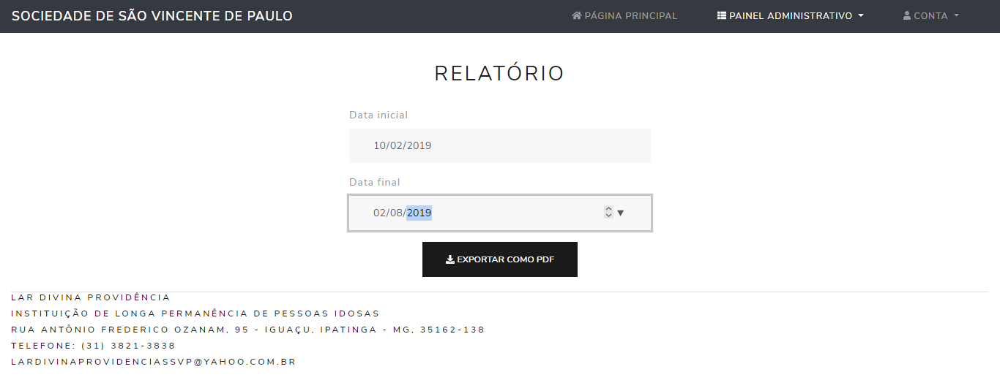

Como encontrar um produto
Clique no painel administrativo acima e depois clique em "produtos".
Tela inicial
Na tela existe uma lista de produtos, você pode procurar pelo nome do produto na barra de
busca acima. Para garantir que você ache o produto pelo nome, sempre deixe a opção "todos"
marcada logo abaixo da barra de busca.
Barra de busca
Como adicionar um produto
Clique no painel administrativo acima e depois clique em "produtos".
Clique no botão no canto direito de cima "adicionar novo produto".
Botão de adicionar produto
Depois preencha todos as informações pedidas e depois clique em "salvar".
Não vai ser possível salvar o produto se algum dado não foi preenchido.
Adicionando novo produto
Após isso aparecerá uma mensagem que o novo produto foi criado.
Resposta do sistema
Como mudar o estoque de um produto
Clique no painel administrativo acima e depois clique em "produtos".
Encontre o produto que deseja mudar o estoque e clique em "alterar estoque", que irá aparecer
um tela com as informações do produto. Confira se é esse mesmo o produto que você deseja
mudar o estoque. Depois selecione a opção "entrada", se você deseja dar entrada ou
a opção "saida", se você deseja dar baixa no estoque, digite a quantidade de entradas ou
saídas e clique em "salvar". Não vai ser possível salvar o estoque se alguma informação
não foi preenchida.
Alterando o estoque
Após isso aparecerá uma mensagem que o novo produto foi criado.
Resposta do sistema
Como excluir um produto
Clique no painel administrativo acima e depois clique em "produtos".
Encontre o produto que deseja mudar o estoque e clique em "excluir produto". depois vai aparecer
uma mensagem confirmando se você realmente deseja excluir ele. Caso tenha certeza que sim clique
em excluir.

Excluindo um produto
Ao final uma mensagem aparecerá dizendo que o produto foi excluido com sucesso.
Resposta do sistema
Como mostrar quais produtos quero que apareça
Clique no painel administrativo acima e depois clique em "produtos".
Você pode filtrar por uma das categorias no botao de seleção (remédio, limpeza,
alimento perecível, alimento não perecível).
Botão de seleção
Como mostrar os produtos da forma que eu quiser
Clique no painel administrativo acima e depois clique em "produtos".
É possível clicar em um dos títulos da tabela, que os produtos ficarão em ordem crescente, se clicar pela
primeira vez, ou decrescente, se clicar pela segunda vez.
Abaixo temos o que acontece ao clicar em cada título pela primeira vez ou pela segunda vez:
• "nome do produto" - ordem alfabética (A-Z ou Z-A)
• "quantidade no estoque" - ordem crescente ou ordem decrescente
• "quantidade mínima" - ordem crescente ou ordem decrescente
• "categoria" - todos os produtos da mesma categoria em ordem alfabética (A-Z ou Z-A)
• "unidade" - todos os produtos da mesma unidade em ordem alfabética (A-Z ou Z-A)
• "situação" - ordem dos que mais estão em falta ou dos que menos estão em falta
Como gerar uma lista de todos os produtos
Clique no painel administrativo acima e depois clique em "produtos".
Escolha em que ordem deseja que os produtos fiquem (Olhar o tutorial "Como mostrar os
produtos da forma que eu quiser") e clique no botão no canto direito de cima "Gerar lista de produtos".
Um pdf com o nome "lista de produtos.pdf" será baixado, que possui as
informações de todos os produtos, aparecendo na ordem dos produtos que estão mais em
falta. Esse pdf pode ser útil para ter um documento impresso, mostrando quais produtos
a entidade mais precisa ou usa-lo como lista de compras ou de necessidades.
Botão para gerar lista
Como gerar um relátorio de entradas e saídas de todos os produtos
Clique no painel administrativo acima e depois clique em "relatório".
Na nova tela, informe a data inicial e data final do relatório. Perceba que não é preciso digitar
as barras "/". Depois de preenchido, aperte o botão "gerar relatório". Um pdf com o nome
"relatorio.pdf" será baixado automaticamente.

Gerando relatório
Entendendo o relatório
No cabeçalho do relatório é informado a data de emissão do relatório e o período informado na
hora da emissão. O "saldo anterior" é a quantidade que existia do produto antes da data inicial.
As "entradas" são quantas unidades daquele produto que foram adicionados durante o período
informado no cabeçalho. As "saídas" são quantas unidades daquele produto que foram consumidas
durante o período informado no cabeçalho. O "saldo atual" é a quantidade que existia na data final
do período informado. Ele é calculado da seguinte forma:
saldo atual = saldo anterior + entradas - saidas